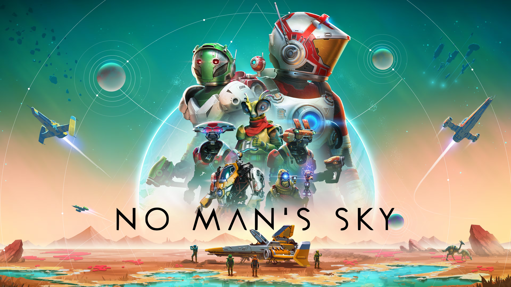

Retro Gaming MX
El portal web de videojuegos
El portal web de videojuegos
| Imagen | Título | Desarrollador | Resumen |
|---|---|---|---|
 |
Minecraft | Mojang Studios | Videojuego de construcción y supervivencia en un mundo de bloques. |
 |
Red Dead Redemption I | Rockstar Games | Juego de acción-aventura ambientado en el Oeste americano y mexicano. |
 |
Red Dead Redemption II | Rockstar Games | Secuela de Red Dead Redemption, con una historia más profunda y un mundo abierto expansivo. |
 |
Rust | Facepunch Studios | Juego de supervivencia multijugador en un mundo post-apocalíptico. |
|  | No Man's Sky | Hello Games | Juego de exploración espacial con millones de planetas proceduralmente generados. |
Minecraft es un juego que ha revolucionado la forma en que los jugadores interactúan con los mundos virtuales, fomentando la creatividad y la colaboración entre jugadores de todas las edades.
Red Dead Redemption I estableció un nuevo estándar para los juegos de mundo abierto, combinando una narrativa envolvente con una jugabilidad dinámica en un entorno históricamente rico.
Red Dead Redemption II no solo superó a su predecesor en términos de escala y detalle, sino que también profundiza en la narrativa y las historias de cada personaje, ofreciendo una experiencia de juego inolvidable.
Rust ha redefinido el género de supervivencia multijugador, ofreciendo una experiencia desafiante y competitiva donde la supervivencia depende de la estrategia, el trabajo en equipo y la adaptabilidad.
No Man's Sky representa la ambición de crear un universo ilimitado para explorar, evolucionando continuamente para ofrecer a los jugadores nuevas razones para descubrir y maravillarse ante la vastedad del cosmos.